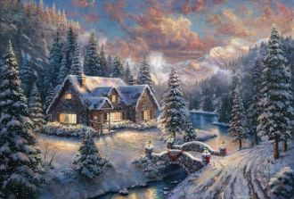
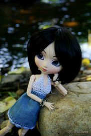
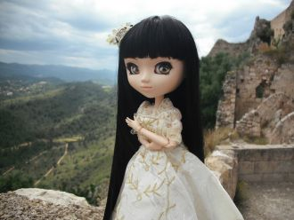
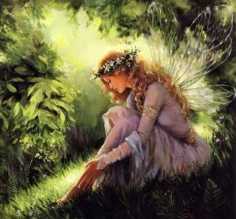
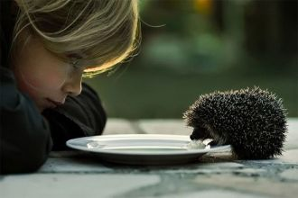
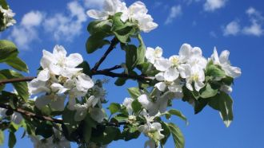

Декабрь... Зима раскинулась по необъятной,Все города и сёла засыпая снегом.Нас ждёт пора чудес невероятных,Которые мы вспомним предстоящим летом.

Как пойду я на быструю речку,Сяду я да на крут бережок,Посмотрю на родную сторонку,На зеленый приветный лужок.

Вдоль по улице метелица метёт,Скоро все она дороги заметёт.Ой, жги-жги, жги-говори,Скоро все она дороги заметёт.

Я верю в Свет твоей души,Который так меня привлёк.Как будто голос из тиши,В моих глазах огонь зажёг.
Есть много в России красивых девиц,Но сила, наверное, не в красоте.Листая обложки гламурных страниц,Я понял лишь то, что она в простоте.
«Спасибо» много не бывает,Не стыдно двадцать раз сказать.Возможно глупость вызывает,Но это лучше, чем молчать.
Цените тех, кто рядом с вами,Кто принял вас таким, как есть,И вы поймёте, что с годами,Вы миром будете владеть.
Благоуханный аромат лилий,Завербовал память мою.Глаза твои словно пленили,Будто оказался в раю.Предок твой, Амир,Его благодарю.
Мы вместе...Мы вместе...

Доброжелателен будь ты, и чист душой,Не отвечай на зло таким же злом.Пускай толпа идёт с толпой,А ты всегда оставайся собой.
Имея деньги, понимаешь,Что как пришли, так и уйдут.Года пройдут и ты узнаешь,Что лишь родные нас поймут.
«Ты будешь счастлив только с тем,С кем можешь быть самим собой».С другими будешь ты – никем,И станешь сам себе чужой.
Мама, всё позади,Ты всё преодолела.Теперь тебе вперёд идти,И как бы раньше ни болела.

Пчелиный райКинувшись на пасеку вижу я пчелуДорогая пчёлочка мёд я соберуГде твоя пчелиная дружная семьяГде твои родители всего улея
Роскошь должна быть не в доме, а в сердце,Тихонечко жить и всех озарять.Встретив такую же роскошь – согреться,И мир вопреки всему злому менять.
Любовь не может быть с разводом,Не может быть совсем чуть-чуть.Не может по средине путьРазбить, продолжив самоходом.
Ты лучше книги умные читай,Скромна будь ты и неприступна.Святой дорогою ступай,И станешь ты находкой мужа.
О чём писать, когда нет музы?Когда не видишь смысла в этом.Мой дядя вновь грызёт арбузы,Тем самым провожая лето.⠀А лето наше словно миг,
Уходишь? Уходи красиво,И не оглядывайся вспять!Пускай уход твой будет силой,Кой во Вселенной не сыскать.
Мне хочется взять и уехать,При этом никому не сказав.Там солнце будет хотеть,Себя мне. не боясь. навязать.